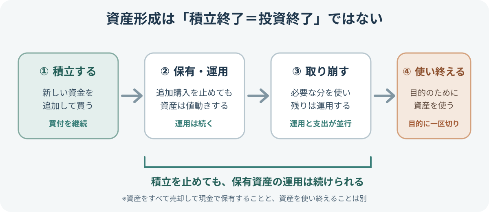
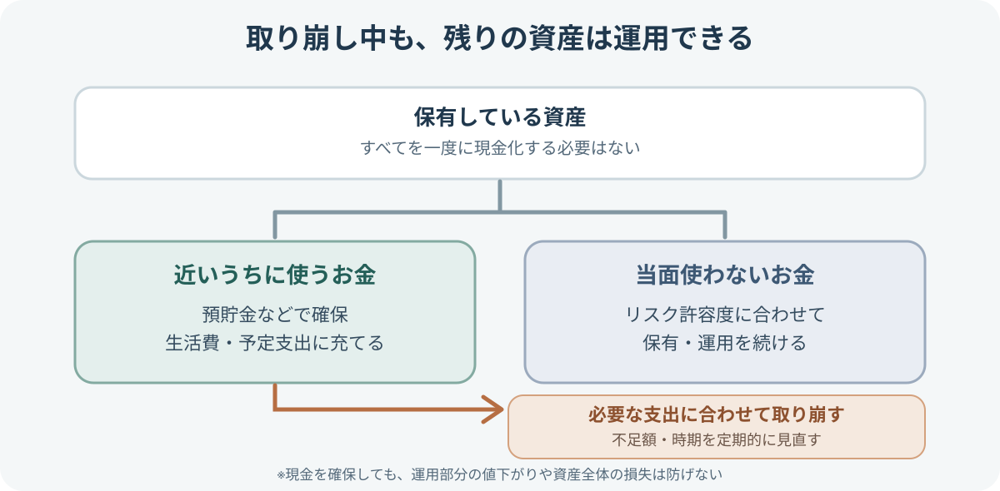

カテゴリツリーを開く
投資に終わりはあるのか？積立・運用・取り崩しから考える資産形成の出口
積立をやめても、保有している資産を運用し続けることができます。資産を使い始めても、必要な分だけ取り崩せば残りは運用できます。では、資産形成における「終わり」とは何でしょうか。積立の終了、取り崩し、資産を使い終える段階を分けて考えます。
積立をやめることと、投資を終えることは同じではありません。必要な分を取り崩している間も、残りの資産は運用を続けています。この記事では、投資に回していた資産を使い終えるところを、資産形成の一つの区切りとして考えます。
投資に決まった終わりはない
投資には「何歳になったら終わり」「何年続けたら終了」という共通の期限はありません。何のために資産をつくり、いつから使い、どの程度を残したいかによって、終わり方は変わります。
たとえば、住宅購入の頭金を準備する投資なら、必要な金額を確保して売却した時点で、その目的の運用は終わります。一方、老後の生活費を準備する場合は、退職後に積立をやめても、保有資産を運用しながら何年にもわたって使うことがあります。
「積立をやめる」「資産を使い始める」「すべて売却する」は別々の段階です。積立を終えたあとも、保有資産を運用し続けることができます。
積立・運用・取り崩しは別の期間
投資の期間を考えるときは、次の3つを分けると分かりやすくなります。
| 期間 | 何をする期間？ | 資産の状態 |
|---|---|---|
| 積立期間 | 給与や貯蓄から新たな資金を追加して買い付ける | 投資元本を追加していく |
| 保有・運用期間 | 保有する商品を持ち続け、値動きや収益を受ける | 追加購入がなくても資産価値は変動する |
| 取り崩し期間 | 必要な金額だけ売却し、生活費や目的の支出に使う | 使った分だけ残高は減るが、残りは運用できる |

この3つは、必ずしも順番に完全に切り替わるわけではありません。積立を続けながら一部を使う人もいますし、退職後に追加投資を止めて、保有資産の一部を売りながら残りを運用する人もいます。投資期間は「買い続ける年数」だけでなく、資産を保有する期間や、使いながら運用する期間も含みます。
積立をやめても運用は続く
積立投資を20年間続け、その後は新しい資金を追加しないケースを考えてみましょう。積立を止めた時点で購入は終わりますが、それまでに買った投資信託や株式を保有していれば、その価格はその後も変動します。
値上がりすれば資産が増えることがあり、値下がりすれば資産が減ることもあります。分配金や配当を受け取る商品もあれば、収益を内部で再投資する商品もあります。追加購入をしなくても、保有資産の運用そのものが自動的に止まるわけではありません。
積立額や買付頻度は、「積立投資とは？」で解説しています。家計から無理のない投資額を決める手順は、「投資に回すお金はいくら？」も参考になります。
資産を使い始めても投資は続けられる
資産を使うときも、必ずすべてを売却する必要はありません。必要な金額だけ一部を売却し、残りの資産を保有し続ける方法があります。これを「取り崩し」と呼びます。
たとえば、老後の生活費として毎月の不足分を投資資産から補う場合、毎月または数か月ごとに必要な分だけ売却し、残りは運用を続けることができます。使う金額や時期に合わせて、売却の頻度や現金で持っておく額を考えます。
金融庁のNISA活用事例でも、保有資産を一度にすべて売却するのではなく、必要に応じて部分的に売却し、運用を続けながら取り崩す方法が紹介されています。金融庁「NISAの活用事例」
ただし、取り崩し中は資産が減る一方で、残った資産の価格も変動します。相場が下落しているときに同じ金額を取り崩すと、より多くの口数・株数を売ることになり、その後の回復に参加できる資産が少なくなる場合があります。近い時期に使うお金をどう確保するか、運用を続ける部分をどの程度残すかを考えておくことが大切です。
必要な分を使い、残りを運用する

資産を取り崩しながら運用を続けるときは、「いくら持っているか」だけでなく、「毎年いくら不足するのか」を先に計算します。生活費の全額を投資資産でまかなうとは限りません。年金や給与、その他の収入で足りる分を差し引き、不足する金額を資産から補う考え方です。
- 年間の支出を見積もる：毎月の生活費に加え、税金・保険料・医療費・住まいの修繕など、年に数回または一度だけ発生する支出も確認します。
- 収入を差し引く：年金、給与、事業収入など、使う予定のある収入を差し引きます。
- 不足額を取り崩しの目安にする：不足額を月単位・年単位に整理し、定期的に見直します。予備費や臨時支出も別に考えておきます。
次に、近いうちに使う予定の資金と、当面使わない資金を分けます。たとえば、次回の取り崩しに備える現金を預貯金などで確保し、それ以外の資産は自分のリスク許容度や使う時期に合わせて運用を続ける方法があります。現金で何年分を持つべきかに一律の正解はありません。収入の安定性、支出の変動、資産全体の値動きへの耐性に合わせて決めます。
「使う予定のお金」と「すぐには使わないお金」を分けることで、生活費のために保有資産を一度にすべて売却せずに済みます。ただし、運用を続ける部分は値下がりする可能性があり、現金を確保していても資産全体の損失を防げるわけではありません。
取り崩し方には、毎月・毎年の金額を決める方法と、資産残高に対する割合を決める方法があります。
| 方法 | 特徴 | 注意点 |
|---|---|---|
| 定額で取り崩す | 毎月の受取額を決めやすく、家計の計画を立てやすい | 相場が下落しても同じ金額を売ると、売却口数が増えて資産の減少が速まる場合がある |
| 定率で取り崩す | その時点の資産残高に応じて取り崩し額が変わる | 相場が下がると受取額も減り、生活費を安定させにくい |
| 組み合わせる | 基本生活費は収入や定額で考え、変動できる支出は資産残高に応じて調整する | 支出に優先順位をつけ、定期的に見直す必要がある |
どの方法でも、相場が下がったときに予定どおり売却を続けるのか、支出の一部を先送りするのか、現金の予備をどのように補充するのかをあらかじめ考えておくと、判断しやすくなります。運用資産を売却するときは、資産配分の偏りを見直す機会として、値上がりして比率が大きくなった資産から売る方法もあります。ただし、税金・手数料・口座の違いも確認が必要です。
この考え方は、特定の割合で取り崩せば資産が必ず長持ちするという意味ではありません。運用成果、物価、寿命、支出の変化によって結果は変わります。J-FLECも、老後の生活設計や資産寿命を考え、計画的な取り崩しと運用継続を組み合わせる考え方を紹介しています。J-FLEC「人生100年時代 始めようお金の準備」
数字で見る取り崩し
運用資産が1,000万円あり、そこから毎年60万円を生活費に使うと仮定します。運用による増減や税金・手数料をいったん考えず、取り崩しだけを見ると、次のようになります。
| 時点 | 取り崩し前 | 使う額 | 取り崩し後 |
|---|---|---|---|
| 開始時 | 1,000万円 | — | 1,000万円 |
| 1年目 | 1,000万円 | 60万円 | 940万円 |
| 2年目 | 940万円 | 60万円 | 880万円 |
| 3年目 | 880万円 | 60万円 | 820万円 |
| 4年目 | 820万円 | 60万円 | 760万円 |
この例では、運用益がなければ取り崩すたびに残高が減ります。実際には運用による値上がり・値下がりがあるため、残高の減り方は一定ではありません。運用が好調なら減少が緩やかになる場合もありますが、下落が続けば想定より早く資産が減ることもあります。
投資を終えるのはどんなとき？
ここまで見てきたように、積立をやめても保有資産の運用は続きます。また、生活費などに必要な分を取り崩している間も、残った資産は運用中です。したがって、この段階は「投資の終わり」ではなく、資産を使いながら運用を続けている期間です。
資産形成の出口として分かりやすい区切りは、投資に回していた資産を、目的に合わせて使い終えたときです。たとえば、教育費や住宅購入費、老後の生活費などに充て、運用していた資産が残らなくなれば、その資産を使うための投資は終わります。
一方、保有商品をすべて売却して現金に換えただけなら、運用は止まりますが、資産を使い終えたわけではありません。現金として残しておくことも、後から再び投資することもできます。そのため、単に売却したことと、資産形成の目的を終えたことは分けて考える必要があります。
「積立をやめる」→「必要な分を取り崩しながら運用する」→「投資に回していた資産を使い終える」。この流れを区別すると、積立終了を投資全体の終了と取り違えずにすみます。
自分の出口を考える
投資を始めるときに、何十年先の売却日まで決めておく必要はありません。ただし、資産をつくる段階から「いつか使う」ことを考えておくと、積立を止める時期や取り崩し方を見直しやすくなります。
- 何のための資産か：住宅、教育、老後、自由に使える資金など、目的を整理する。
- いつから使う可能性があるか：一度に使うのか、長期間にわたり少しずつ使うのかを考える。
- 積立をいつまで続けるか：収入や家計、目標額に合わせて決める。積立終了後も保有資産は運用できる。
- 取り崩し中にどの程度運用を続けるか：近いうちに使う現金と、長く運用する資産を分ける。
- 定期的に見直す：支出、収入、資産残高、相場の変化に合わせて取り崩し額や資産配分を調整する。
生活費や急な出費に備えるお金を投資資産と分ける方法は、「生活防衛資金とは？」で解説しています。投資を始める前に目的・期間・投資額を整理したい場合は、「投資を始める前に確認したい7つのこと」から確認できます。
複利の仕組みは資産を育てる段階で役立ちますが、資産を使う段階では取り崩す金額や時期も残高を左右します。「複利とは？」と合わせて読むと、資産形成と取り崩しの違いを整理できます。
まとめ：投資の終わりは、自分が資産をどう使うかで決まる
積立をやめても、保有資産を持ち続けていれば運用は続きます。資産を使い始めても、必要な分だけ取り崩している間は、残りの資産の運用が続きます。投資に回していた資産を目的に合わせて使い終えたとき、資産形成には一つの区切りがつきます。
投資は「いくらまで増やすか」だけでなく、「いつから、何に、どのように使うか」まで含めて考えるものです。積立をやめた後も運用が続くこと、取り崩し中も残りの資産は投資されていることを理解し、自分の暮らしや目的に合った使い方を考えましょう。
資産を使う段階まで考えたら、まずは自分の目的・投資額・値下がりへの耐性を整理してみましょう。
公式情報・参考資料
- 金融庁：NISAの活用事例 — 保有資産の一部を売却し、運用を続けながら取り崩す活用例。
- 金融庁：資産形成の基本 — 家計管理、ライフプランニング、長期・積立・分散投資の基本。
- J-FLEC：投資のはじめ方 — 投資の基本とリスク許容度を考える際の情報。